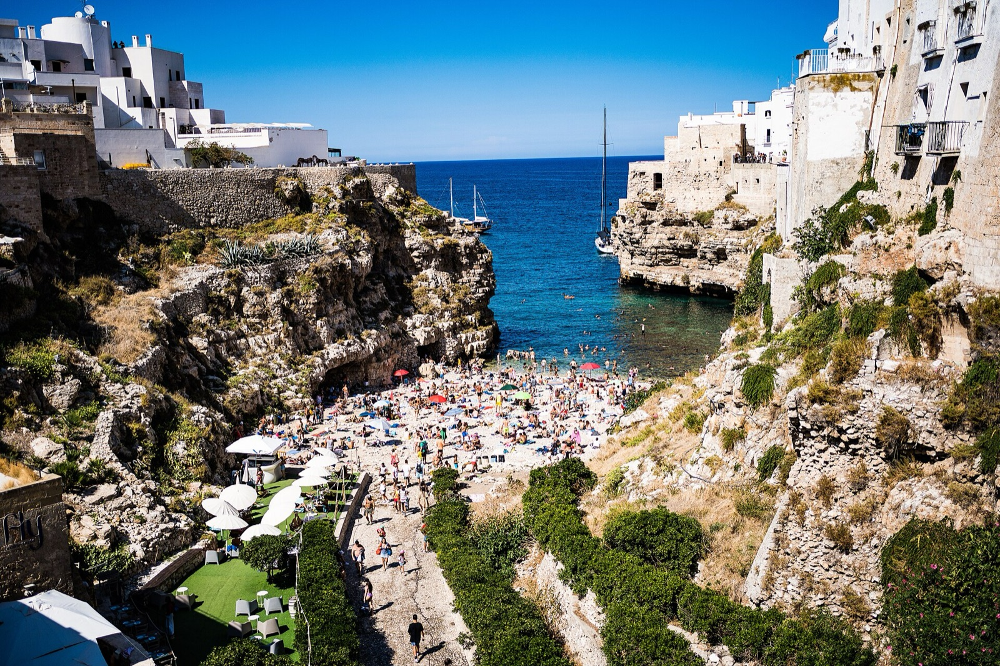
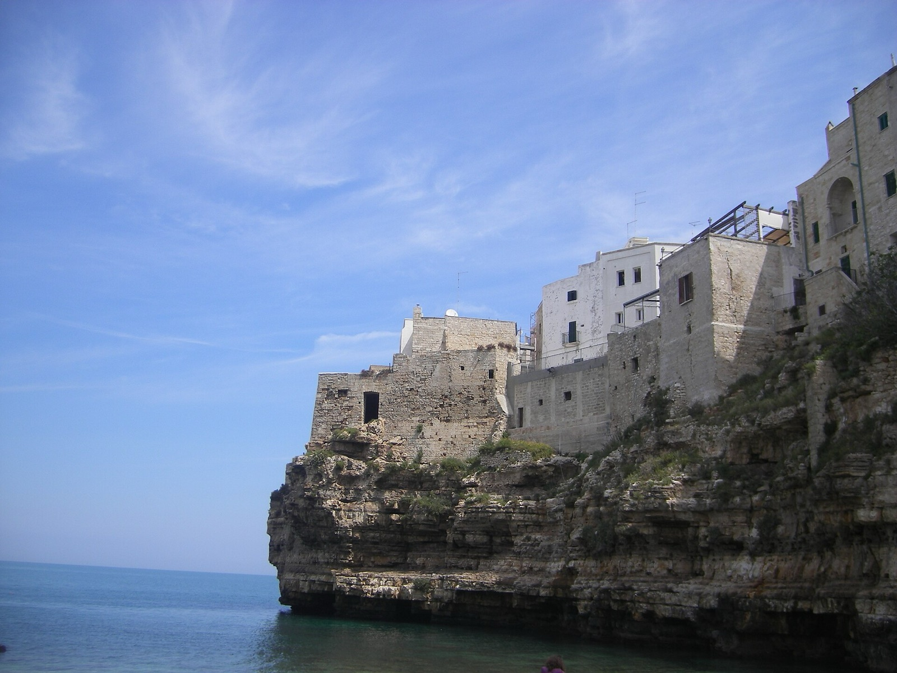
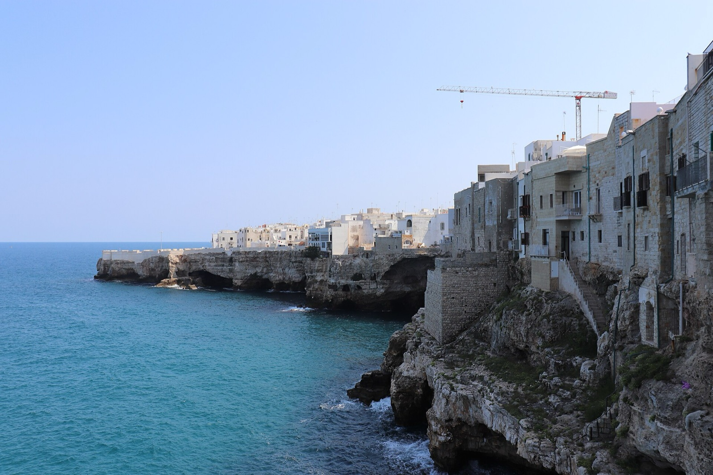
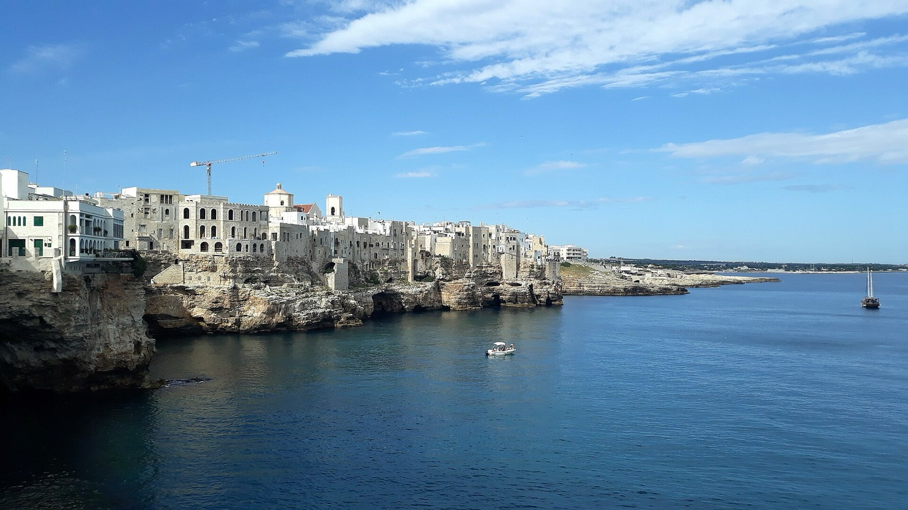

Белоснежный городок на отвесных скалах над бирюзовым морем — настоящая жемчужина Апулии.
Из Бари мы отправимся туда, где город буквально висит над морем.
Полиньяно-а-Маре стоит на белых известняковых скалах, в которые снизу бьёт Адриатика. Узкие переулки выводят к неожиданным смотровым площадкам, балконы нависают над водой, а на ступенях кто-то когда-то написал стихи. Это место, где хочется замедлиться, поймать момент — и просто быть.
Маленький галечный пляж зажат между двумя скалами, а над ним перекинут старинный каменный мост — когда-то по нему проходила римская Виа Траяна. Вода здесь невозможного бирюзового цвета, и именно этот вид украшает все открытки Апулии.
Сверху, со смотровых террас, бухта выглядит как театральная сцена — особенно на закате.

Старый город над обрывомЧерез арку Арко-Маркезале попадаешь в исторический центр — лабиринт выбеленных домов, уютных площадей и балконов, с которых видно только море. На стенах и ступенях — строчки стихов: Полиньяно любит слово не меньше, чем вид.
Отсюда родом Доменико Модуньо — автор знаменитой «Volare». Его памятник с раскинутыми руками встречает гостей на набережной.

Морские гроты в скалахСкалы под Полиньяно источены десятками гротов. Самый известный — Гротта-Палацезе, где прямо в пещере над водой устроен ресторан. Морские пещеры можно увидеть и с воды, на лодке, когда город открывается совсем с другой стороны.
Шум прибоя в каменных сводах — отдельное впечатление, которое остаётся надолго.
Бухта с галечным пляжем и старинным мостом.
Балконы над морем с видом на бухту и скалы.
Ворота в белоснежный исторический центр.
Пещеры в скалах, включая Гротта-Палацезе.
Автору «Volare» — на набережной у моря.
Строчки на ступенях и стенах старого города.
Нажмите на фотографию, чтобы рассмотреть ближе.

Место, где хочется замедлиться, наслаждаться красотой момента и просто быть.